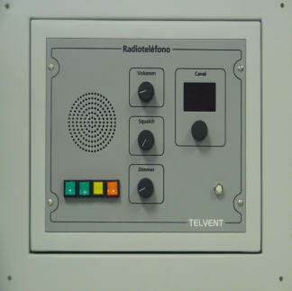

Radioteléfono
El puesto de alumno puede incorporar uno o más radioteléfonos para comunicaciones con otros puestos del simulador.

Contiene los siguientes elementos:
- Altavoz.
- Pulsador e Indicador de ON / OFF del radioteléfono: pulsador e indicador de encendido y apagado del radioteléfono correspondiente. Debe ser pulsado para encender o apagar el equipo, y permanece iluminado mientras el equipo esté encendido.
- Pulsador e Indicador de Potencia de Transmisión: pulsador para conmutar entre potencia de transmisión baja y alta. Permanece iluminado cuando se selecciona potencia alta.
- Indicador de canal Duplex: indicador que se ilumina cuando el canal seleccionado es Duplex.
- Indicador de Detección de Portadora: indicador que se ilumina cuando se recibe fonía en el equipo, simulando detección de portadora.
- Indicador digital de Canal: indicador digital de tres dígitos en el que se muestra el canal seleccionado por el operador.
- Selector de Canal: selector giratorio para selección de canal. Girándolo a la derecha avanza al siguiente canal de entre los disponibles para el equipo, y a la izquierda retrocede al canal anterior.
- Selector de Volumen: selector giratorio para regular el nivel de volumen del equipo.
- Selector de Squelch: selector giratorio para ajustar el nivel de squelch tenido en cuenta por el equipo.
- Selector de Intensidad de Luz (DIMMER): selector giratorio que permite regular la intensidad de luz de este módulo.
- Conector para Microteléfono.
- Microteléfono: microteléfono con pulsador de PTT incluido.